Experimental redesign of GGally::ggcoef() using gtsummary::tbl_regression().
Use wit caution, syntax is subject to change.
ggcoef_multinom() is a variation of ggcoef_model() adapted to multinomial
logistic regressions performed with nnet::multinom().
ggcoef_multinom() works only with the dev version of gtsummary.
ggcoef_model( x, label = NULL, exponentiate = FALSE, include = dplyr::everything(), show_single_row = NULL, conf.level = 0.95, intercept = FALSE, show_p_values = TRUE, signif_stars = TRUE, significance = NULL, return_data = FALSE, ... ) ggcoef_compare( mods, type = c("dodged", "faceted"), label = NULL, exponentiate = FALSE, include = NULL, show_single_row = NULL, conf.level = 0.95, intercept = FALSE, significance = 0.05, return_data = FALSE, ... ) ggcoef_multinom( x, type = c("dodged", "faceted"), y.level_label = NULL, label = NULL, exponentiate = TRUE, include = dplyr::everything(), show_single_row = NULL, conf.level = 0.95, intercept = FALSE, significance = 0.05, return_data = FALSE, ... ) ggcoef_data( x, label = NULL, exponentiate = FALSE, include = dplyr::everything(), show_single_row = NULL, conf.level = 0.95, intercept = FALSE, significance = 0.05 ) ggcoef_plot( data, exponentiate = FALSE, point_size = 2, point_stroke = 2, point_fill = "white", colour = NULL, colour_guide = TRUE, colour_lab = "", shape = "significance", shape_values = c(16, 21), shape_guide = TRUE, shape_lab = "", errorbar = TRUE, errorbar_height = 0.1, errorbar_coloured = FALSE, stripped_rows = TRUE, strips_odd = "#11111111", strips_even = "#00000000", vline = TRUE, vline_colour = "grey50", dodged = FALSE, dodged_width = 0.8, facet_col = NULL )
Arguments
| x | a regression model object |
|---|---|
| label | list of formulas specifying variables labels, e.g. |
| exponentiate | if |
| include | variables to include in output, may be a vector of quoted variable names, unquoted variable names, or tidyselect select helper functions |
| show_single_row | by default categorical variables are printed on multiple rows. If a variable is dichotomous (e.g. Yes/No) and you wish to print the regression coefficient on a single row, include the variable name(s) here–quoted and unquoted variable name accepted |
| conf.level | confidence level (between 0 and 4) for confidence intervals, default to .95, |
| intercept | if |
| show_p_values | if |
| signif_stars | if |
| significance | level (between 0 and 1) below which a coefficient is consider to be significantly different from 0 (or 1 if |
| return_data | if |
| ... | parameters passed to |
| mods | named list of models |
| type | a dodged plot or a facetted plot? |
| y.level_label | an optional named vector for labelling |
| data | a data frame containing data to be plotted, typically the output of |
| point_size | size of the points |
| point_stroke | thickness of the points |
| point_fill | fill colour for the points |
| colour | optional variable name to be mapped to colour aesthetic |
| colour_guide | should colour guide be displayed in the legend? |
| colour_lab | label of the colour aesthetic in the legend |
| shape | optional variable name to be mapped to the shape aesthetic |
| shape_values | values of the different shapes to use in |
| shape_guide | should shape guide be displayed in the legend? |
| shape_lab | label of the shape aesthetic in the legend |
| errorbar | should error bars be plotted? |
| errorbar_height | height of error bars |
| errorbar_coloured | should error bars be coloured as the points? |
| stripped_rows | should stripped rows be displayed in the background? |
| strips_odd | color of the odd rows |
| strips_even | color of the even rows |
| vline | should a vertical line de drawn at 0 (or 1 if |
| vline_colour | colour of vertical line |
| dodged | should points be dodged (according to the colour aesthetic)? |
| dodged_width | width value for |
| facet_col | optional variable name to be used for column facets |
Examples
data(trial, package = "gtsummary") trial$high_marker <- factor(trial$marker > 1, label = c("low", "high")) attr(trial$high_marker, "label") <- "Marker level" mod <- glm(response ~ age + stage + grade + high_marker, trial, family = binomial(link = "logit")) ggcoef_model(mod)#>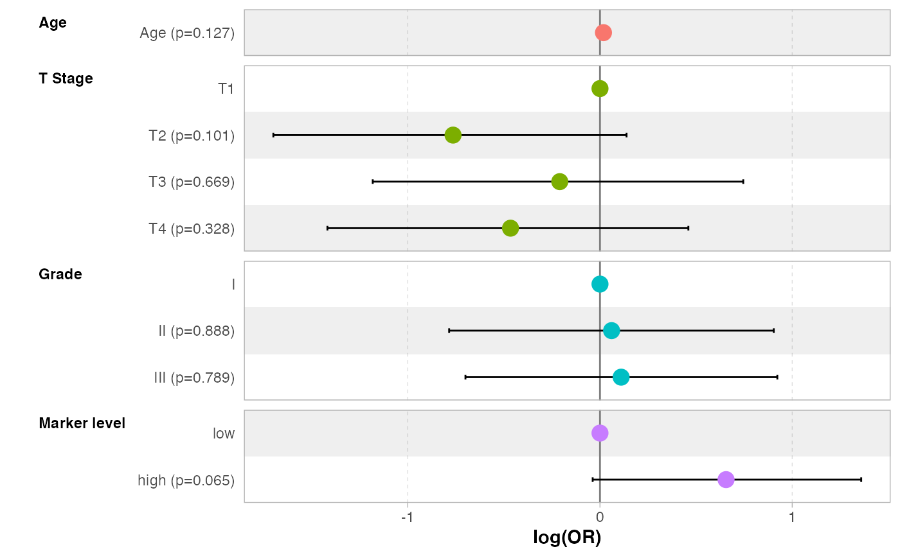ggcoef_model(mod, exponentiate = TRUE)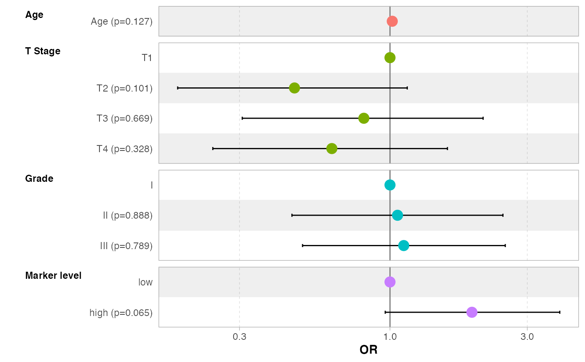ggcoef_model(mod, exponentiate = TRUE, label = c(age = "Age in years", stage = "Stage of the disease"))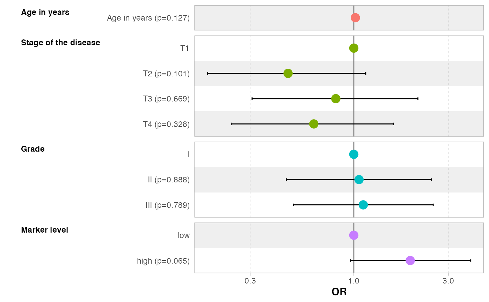ggcoef_model(mod, exponentiate = TRUE, show_single_row = "high_marker", intercept = TRUE)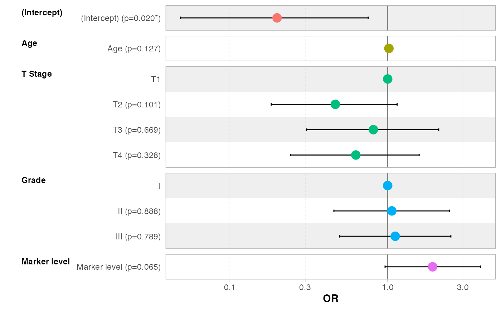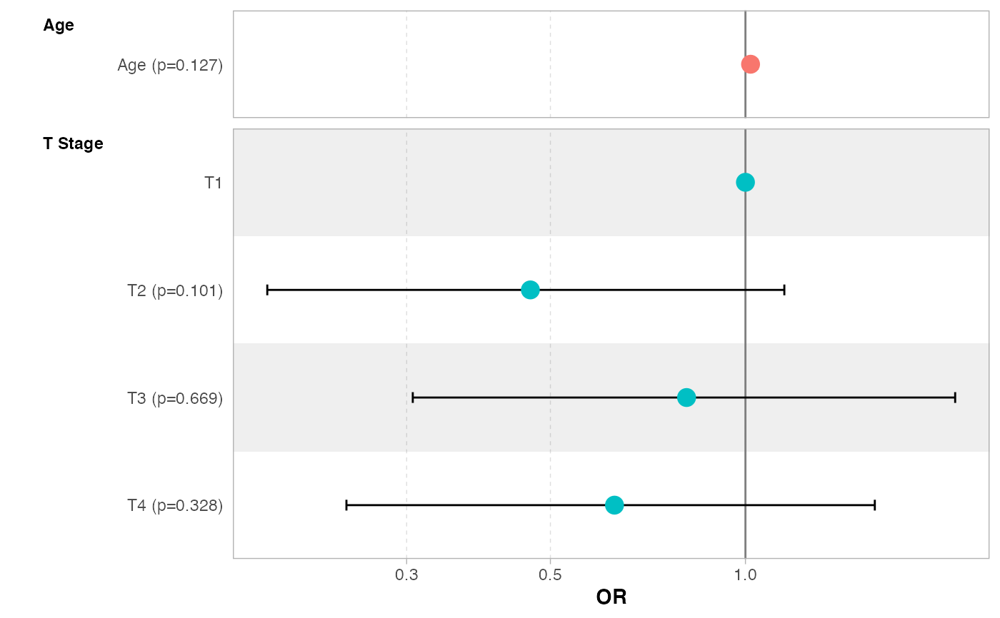ggcoef_model(mod, significance = .10, conf.level = .9, signif_stars = FALSE, show_p_values = FALSE)ggcoef_model(mod, exponentiate = TRUE, colour = NULL, stripped_rows = FALSE, signif_stars = FALSE)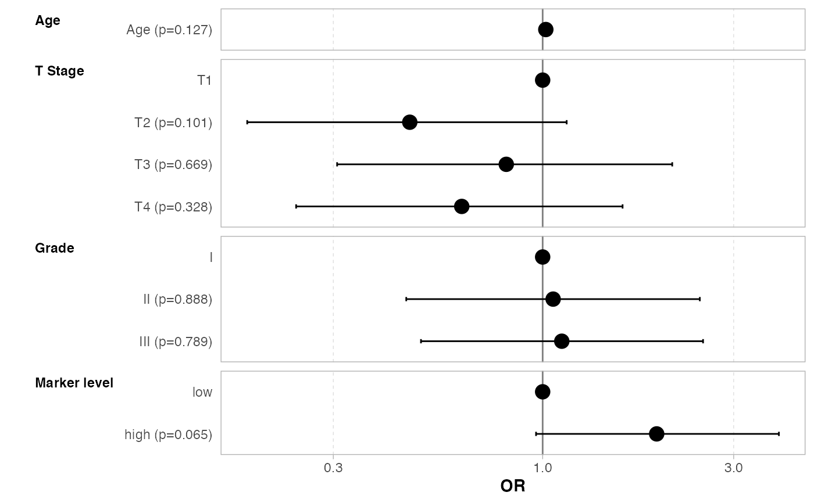ggcoef_model(mod, exponentiate = TRUE, conf.level = NULL)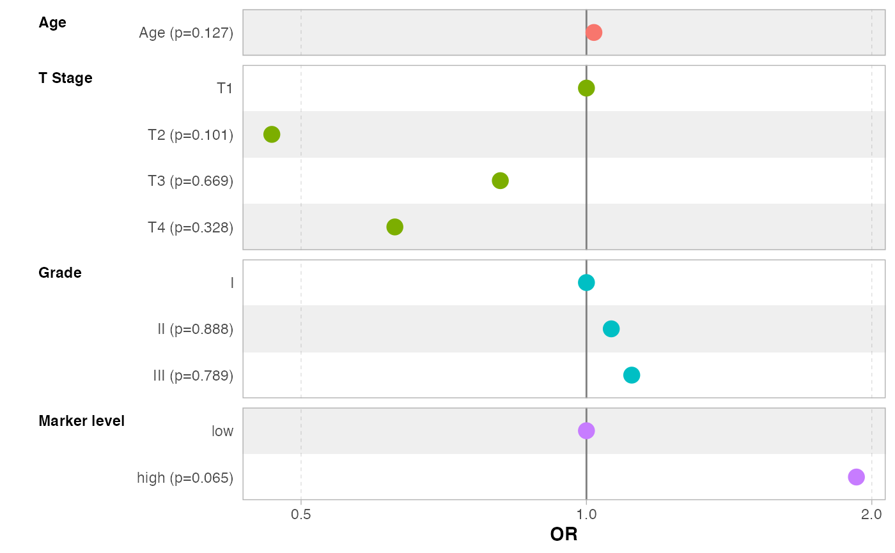mod <- glm(response ~ stage:age + grade:stage, trial, family = binomial(link = "logit")) ggcoef_model(mod, exponentiate = TRUE)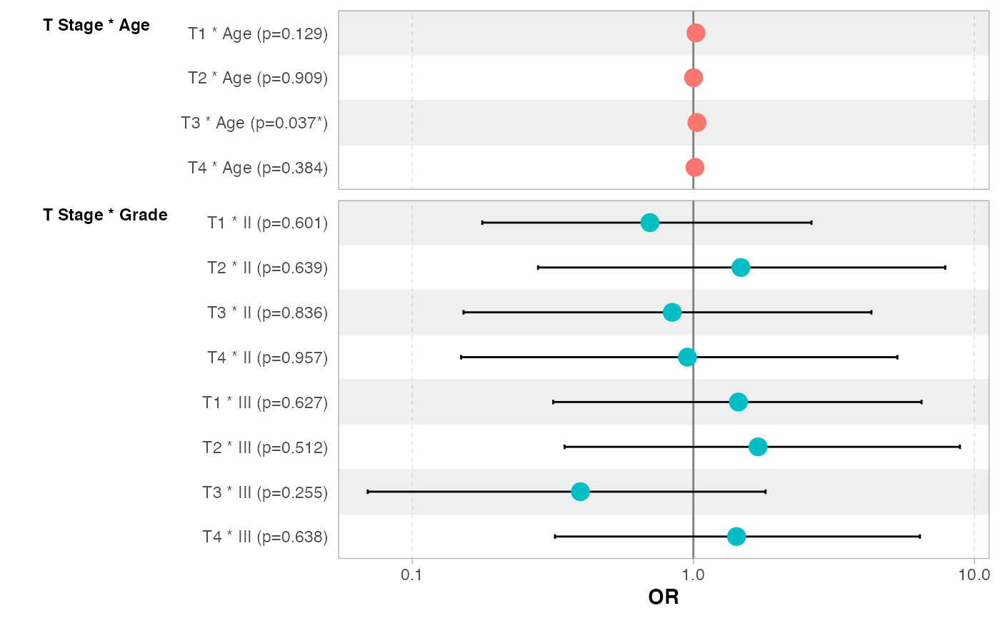if (require(survival)) { test <- list(time = c(4,3,1,1,2,2,3), status = c(1,1,1,0,1,1,0), x = c(0,2,1,1,1,0,0), sex = c("f", "f", "f", "f", "m", "m", "m")) mod <- coxph(Surv(time, status) ~ x + sex, test) ggcoef_model(mod, exponentiate = TRUE) }#>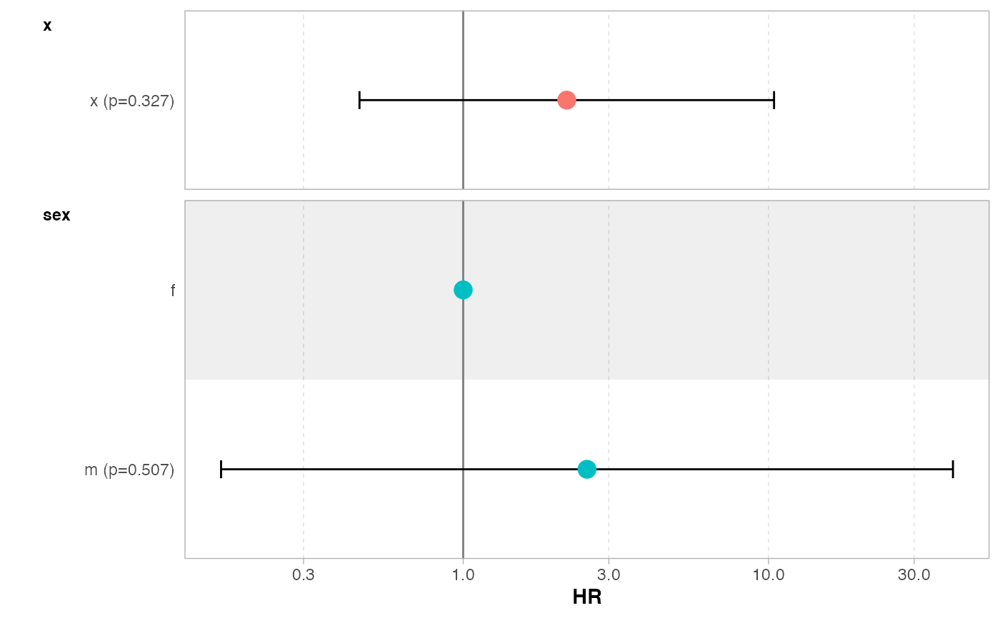# Comparison of several models mod1 <- glm(response ~ age + stage + grade + high_marker, trial, family = binomial()) mod2 <- step(mod1, trace = 0) mod3 <- glm(response ~ high_marker * stage, trial, family = binomial()) mods <- list("Full model" = mod1, "Simplified model" = mod2, "With interaction" = mod3) ggcoef_compare(mods, exponentiate = TRUE)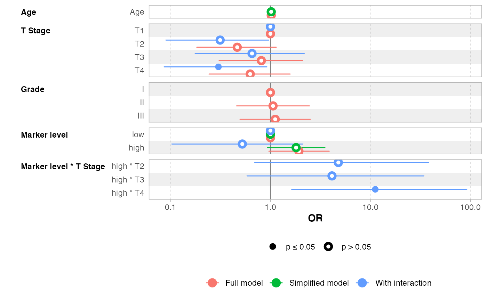ggcoef_compare(mods, exponentiate = TRUE, type = "faceted")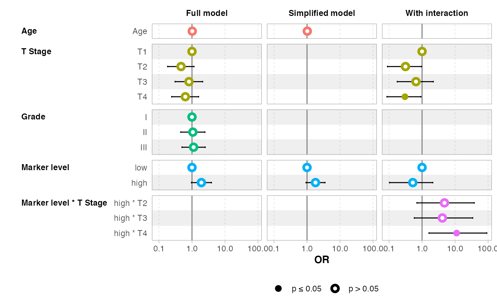# you can reverse the vertical position of the point by using a negative value # for dodged_width (but it will produce some warnings) if (FALSE) { ggcoef_compare(mods, exponentiate = TRUE, dodged_width = -.9) } # specific function for multinom models data(tips, package = "reshape") library(nnet) mod <- multinom(day ~ ., data = tips)#> # weights: 32 (21 variable) #> initial value 338.255824 #> iter 10 value 194.496162 #> iter 20 value 167.182175 #> iter 30 value 165.479678 #> iter 40 value 165.322051 #> iter 50 value 165.318609 #> iter 60 value 165.318436 #> final value 165.318429 #> convergedggcoef_multinom(mod)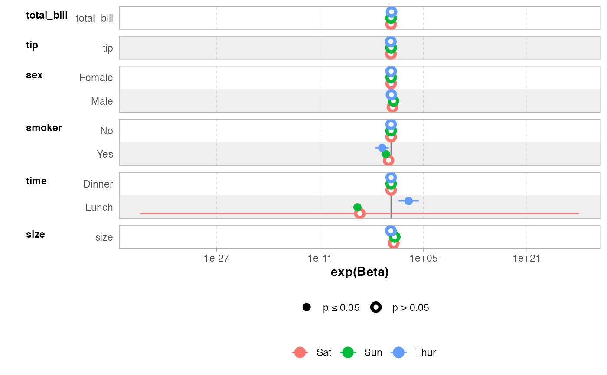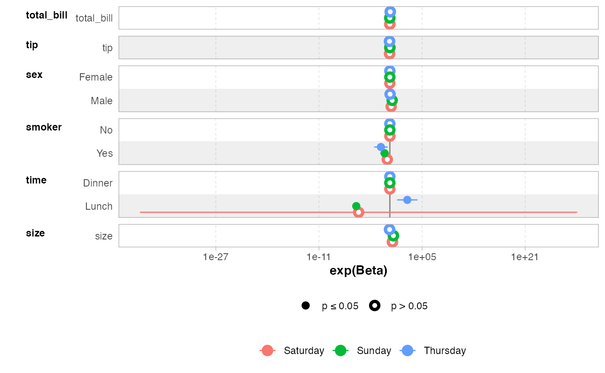